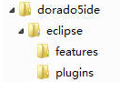

<!DOCTYPE html>
<html>
<head><meta name="generator" content="Hexo 3.9.0">
  <meta charset="utf-8">
  

  
  <title>eclipse插件安装 | 胡子叔叔的博客</title>
  <meta name="viewport" content="width=device-width, initial-scale=1, maximum-scale=1">
  
  
  
  <meta name="description" content="在线安装 SVN 插件： 菜单 —&amp;gt; Help —&amp;gt; Install New Software  进入安装窗体后，点击安装窗体的Add按钮，然后在弹出的窗体中输入插件安装地址：  subversion 1.6.x客户端 subversion 1.7.x客户端 subversion 1.8.x客户端 目前最高版本的SVN插件(截止到2017年1月20日)   在eclipse目录下修改e">
<meta name="keywords" content="eclipse,svn,git">
<meta property="og:type" content="article">
<meta property="og:title" content="eclipse插件安装">
<meta property="og:url" content="carrot-vitamin.github.io/2017/09/15/eclipse插件安装/index.html">
<meta property="og:site_name" content="胡子叔叔的博客">
<meta property="og:description" content="在线安装 SVN 插件： 菜单 —&amp;gt; Help —&amp;gt; Install New Software  进入安装窗体后，点击安装窗体的Add按钮，然后在弹出的窗体中输入插件安装地址：  subversion 1.6.x客户端 subversion 1.7.x客户端 subversion 1.8.x客户端 目前最高版本的SVN插件(截止到2017年1月20日)   在eclipse目录下修改e">
<meta property="og:locale" content="zh-CN">
<meta property="og:image" content="carrot-vitamin.github.io/2017/09/15/eclipse插件安装/decoder.png">
<meta property="og:image" content="carrot-vitamin.github.io/2017/09/15/eclipse插件安装/dorado5_1.png">
<meta property="og:image" content="carrot-vitamin.github.io/2017/09/15/eclipse插件安装/dorado5_2.png">
<meta property="og:image" content="carrot-vitamin.github.io/2017/09/15/eclipse插件安装/dorado5_3.png">
<meta property="og:image" content="carrot-vitamin.github.io/2017/09/15/eclipse插件安装/dorado5_4.png">
<meta property="og:image" content="carrot-vitamin.github.io/2017/09/15/eclipse插件安装/dorado5_5.png">
<meta property="og:updated_time" content="2021-03-30T09:09:00.305Z">
<meta name="twitter:card" content="summary">
<meta name="twitter:title" content="eclipse插件安装">
<meta name="twitter:description" content="在线安装 SVN 插件： 菜单 —&amp;gt; Help —&amp;gt; Install New Software  进入安装窗体后，点击安装窗体的Add按钮，然后在弹出的窗体中输入插件安装地址：  subversion 1.6.x客户端 subversion 1.7.x客户端 subversion 1.8.x客户端 目前最高版本的SVN插件(截止到2017年1月20日)   在eclipse目录下修改e">
<meta name="twitter:image" content="carrot-vitamin.github.io/2017/09/15/eclipse插件安装/decoder.png">
  
    <link rel="alternate" href="/atom.xml" title="胡子叔叔的博客" type="application/atom+xml">
  
  
    <link rel="icon" href="/images/default-avatar.jpg">
  
  
    <link href="//fonts.googleapis.com/css?family=Source+Code+Pro" rel="stylesheet" type="text/css">
  
  <link rel="stylesheet" href="/css/style.css">
  <link rel="stylesheet" href="/css/highlight.css">
</head>
</html>
<body>
  <div id="fullpage" class="mobile-nav-right">
    
      <div id="wrapper" style="background-image: url(/images/bg.jpg)" title="背景图片来自网络">
    
    
      <header id="header">
  <div id="nav-toggle" class="nav-toggle"></div>
  <div class="head-box global-width">
    <nav class="nav-box nav-right">
      
        <a class="nav-item" href="/" title
        
        >首页</a>
      
        <a class="nav-item" href="/archives" title
        
        >归档</a>
      
    </nav>
  </div>
</header>
      <div id="middlecontent" title class="global-width sidebar-right">
        <section id="main"><article id="post-eclipse插件安装" class="article global-container article-type-post" itemscope itemprop="blogPost">
  
    <header class="article-header">
      
  
    <h1 class="article-title" itemprop="name">
      eclipse插件安装
    </h1>
  

    </header>
  
  <div class="article-meta">
    <a href="/2017/09/15/eclipse插件安装/" class="article-date">
  <time datetime="2017-09-15T11:43:04.000Z" itemprop="datePublished">2017-09-15 19:43:04</time>
</a>
    
  <div class="article-category">
    <a class="article-category-link" href="/categories/开发工具/">开发工具</a>
  </div>

    
  <ul class="article-tag-list"><li class="article-tag-list-item"><a class="article-tag-list-link" href="/tags/eclipse/">eclipse</a></li><li class="article-tag-list-item"><a class="article-tag-list-link" href="/tags/git/">git</a></li><li class="article-tag-list-item"><a class="article-tag-list-link" href="/tags/svn/">svn</a></li></ul>

  </div>
  
    <span id="busuanzi_container_page_pv">
      本文总阅读量<span id="busuanzi_value_page_pv"></span>次
    </span>
  

  <div class="article-inner">
    
    <div class="article-content article-content-cloud" itemprop="articleBody">
      
        <h4 id="在线安装-SVN-插件："><a href="#在线安装-SVN-插件：" class="headerlink" title="在线安装 SVN 插件："></a>在线安装 SVN 插件：</h4><ol>
<li><p>菜单 —&gt; Help —&gt; Install New Software</p>
</li>
<li><p>进入安装窗体后，点击安装窗体的Add按钮，然后在弹出的窗体中输入插件安装地址：</p>
<ul>
<li><a href="http://subclipse.tigris.org/update_1.6.x" target="_blank" rel="noopener">subversion 1.6.x客户端</a></li>
<li><a href="http://subclipse.tigris.org/update_1.8.x" target="_blank" rel="noopener">subversion 1.7.x客户端</a></li>
<li><a href="http://subclipse.tigris.org/update_1.10.x/" target="_blank" rel="noopener">subversion 1.8.x客户端</a></li>
<li><a href="http://subclipse.tigris.org/update_1.12.x/" target="_blank" rel="noopener">目前最高版本的SVN插件(截止到2017年1月20日)</a></li>
</ul>
</li>
<li><p>在eclipse目录下修改eclipse.ini文件来指定eclipse启动JDK路径：  </p>
<p> <em>-vm</em><br> <em>C:/Program Files/Java/jdk1.7/jdk1.7.0_51/bin/javaw.exe</em></p>
<p> 添加至 -vmargs 参数上方</p>
</li>
</ol>
<a id="more"></a>

<h4 id="在线安装反编译插件："><a href="#在线安装反编译插件：" class="headerlink" title="在线安装反编译插件："></a>在线安装反编译插件：</h4><ol>
<li>Help –&gt; Eclipse Marketplace</li>
<li>搜索 “Decompiler”，安装即可<br> </li>
</ol>
<h4 id="集成dorado5插件："><a href="#集成dorado5插件：" class="headerlink" title="集成dorado5插件："></a>集成dorado5插件：</h4><p>dorado5最好使用jdk1.6 32位，与eclipse j2ee indigo版本兼容最好。其他eclipse版本貌似view编辑时按钮点击事件不生效。。。<br>现附上安装包链接（均为官方版本）：</p>
<ul>
<li><a href="https://pan.baidu.com/s/1nwLjSHN" target="_blank" rel="noopener">jdk1.6 (包含64位和32位) 密码：xneq</a></li>
<li><a href="https://pan.baidu.com/s/1smCUmYD" target="_blank" rel="noopener">eclipse j2ee indigo 32位 密码：q4wx</a></li>
<li><a href="https://pan.baidu.com/s/1bqIM0MV" target="_blank" rel="noopener">eclipse j2ee indigo 64位 密码：p97a</a></li>
<li><a href="https://pan.baidu.com/s/1jJ0rqey" target="_blank" rel="noopener">eclipse dorado5ide插件 密码：umpq</a></li>
</ul>
<h5 id="集成步骤（默认jdk环境和eclipse已正常安装）："><a href="#集成步骤（默认jdk环境和eclipse已正常安装）：" class="headerlink" title="集成步骤（默认jdk环境和eclipse已正常安装）："></a>集成步骤（默认jdk环境和eclipse已正常安装）：</h5><ol>
<li><p>在eclipse安装目录下新建links目录，并在此目录下创建 com.bstek.dorado.link文件。</p>
</li>
<li><p>将eclipse dorado5ide插件下载后解压，并重组合并：</p>
<p>解压后目录结构为：</p>
<p></p>
<p>整合后目录结构为：</p>
<p></p>
<p><em>整合是指：将aptana和dorado5文件夹下的features和plugins文件夹分别合并后保存在eclipse文件夹下</em></p>
</li>
<li><p>编辑eclipse目录下links文件夹内的com.bstek.dorado.link文件，文件内容为：<br> <code>path=E:\\plugins\\dorado5ide</code></p>
</li>
<li><p>至此，eclipse集成dorado5插件完成。启动eclipse<br><br><br><br>此时eclipse已可开发dorado5项目。</p>
<p>附dorado5 studio客户端：链接：<a href="https://pan.baidu.com/s/1c2Wbu72" target="_blank" rel="noopener">https://pan.baidu.com/s/1c2Wbu72</a> 密码：s31z</p>
</li>
</ol>

      
    </div>
    
      <footer class="article-footer">
        完
      </footer>
    
  </div>
  
    
<nav id="article-nav">
  <div class="article-nav-block">
    
      <a href="/2017/10/11/Java连接虚拟机Oracle数据库的问题/" id="article-nav-newer" class="article-nav-link-wrap">
        <strong class="article-nav-caption"></strong>
        <div class="article-nav-title">
          
            Java连接虚拟机Oracle数据库的问题
          
        </div>
      </a>
    
  </div>
  <div class="article-nav-block">
    
      <a href="/2017/07/23/outlook邮箱pop3配置/" id="article-nav-older" class="article-nav-link-wrap">
        <div class="article-nav-title">outlook建立邮箱</div>
        <strong class="article-nav-caption"></strong>
      </a>
    
  </div>
</nav>

    <link rel="stylesheet" href="/css/gitment.css"> 
<script src="/js/gitment.js"></script>

<div id="gitmentContainer"></div>

<script>
var gitment = new Gitment({
  owner: '',
  repo: '',
  oauth: {
    client_id: '',
    client_secret: '',
  },
})
gitment.render('gitmentContainer')
</script>

  
  
</article>
</section>
        <aside id="sidebar">
  
    <div class="widget-box">
  <div class="avatar-box">
    </img>
    <h3 class="avatar-name">
      
        胡子叔叔
      
    </h3>
    <p class="avatar-slogan">
      资深的打酱油攻城狮
    </p>
  </div>
</div>


  
    
  <div class="widget-box">
    <h3 class="widget-title">分类</h3>
    <div class="widget">
      <ul class="category-list"><li class="category-list-item"><a class="category-list-link" href="/categories/linux/">linux</a></li><li class="category-list-item"><a class="category-list-link" href="/categories/windows/">windows</a></li><li class="category-list-item"><a class="category-list-link" href="/categories/开发工具/">开发工具</a></li><li class="category-list-item"><a class="category-list-link" href="/categories/数据库/">数据库</a></li></ul>
    </div>
  </div>


  
    
  <div class="widget-box">
    <h3 class="widget-title">标签</h3>
    <div class="widget">
      <ul class="tag-list"><li class="tag-list-item"><a class="tag-list-link" href="/tags/eclipse/">eclipse</a></li><li class="tag-list-item"><a class="tag-list-link" href="/tags/git/">git</a></li><li class="tag-list-item"><a class="tag-list-link" href="/tags/linux/">linux</a></li><li class="tag-list-item"><a class="tag-list-link" href="/tags/mysql/">mysql</a></li><li class="tag-list-item"><a class="tag-list-link" href="/tags/oracle/">oracle</a></li><li class="tag-list-item"><a class="tag-list-link" href="/tags/outlook/">outlook</a></li><li class="tag-list-item"><a class="tag-list-link" href="/tags/svn/">svn</a></li></ul>
    </div>
  </div>


  
    
  <div class="widget-box">
    <h3 class="widget-title">标签云</h3>
    <div class="widget tagcloud">
      <a href="/tags/eclipse/" style="font-size: 10px;">eclipse</a> <a href="/tags/git/" style="font-size: 10px;">git</a> <a href="/tags/linux/" style="font-size: 10px;">linux</a> <a href="/tags/mysql/" style="font-size: 10px;">mysql</a> <a href="/tags/oracle/" style="font-size: 10px;">oracle</a> <a href="/tags/outlook/" style="font-size: 10px;">outlook</a> <a href="/tags/svn/" style="font-size: 10px;">svn</a>
    </div>
  </div>

  
    
  <div class="widget-box">
    <h3 class="widget-title">归档</h3>
    <div class="widget">
      <ul class="archive-list"><li class="archive-list-item"><a class="archive-list-link" href="/archives/2018/05/">五月 2018</a></li><li class="archive-list-item"><a class="archive-list-link" href="/archives/2017/10/">十月 2017</a></li><li class="archive-list-item"><a class="archive-list-link" href="/archives/2017/09/">九月 2017</a></li><li class="archive-list-item"><a class="archive-list-link" href="/archives/2017/07/">七月 2017</a></li><li class="archive-list-item"><a class="archive-list-link" href="/archives/2017/06/">六月 2017</a></li></ul>
    </div>
  </div>

  
    
  <div class="widget-box">
    <h3 class="widget-title">最新文章</h3>
    <div class="widget">
      <ul>
        
          <li>
            <a href="/2018/05/15/Linux命令/">Linux命令</a>
          </li>
        
          <li>
            <a href="/2017/10/11/Java连接虚拟机Oracle数据库的问题/">Java连接虚拟机Oracle数据库的问题</a>
          </li>
        
          <li>
            <a href="/2017/09/15/eclipse插件安装/">eclipse插件安装</a>
          </li>
        
          <li>
            <a href="/2017/07/23/outlook邮箱pop3配置/">outlook建立邮箱</a>
          </li>
        
          <li>
            <a href="/2017/06/15/SQL命令/">SQL命令</a>
          </li>
        
      </ul>
    </div>
  </div>

  
      <div class="widget-box">
    <h3 class="widget-title">友链</h3>
    <div class="widget">
      
        <a style="display: block;" href="https://github.com/carrot-vitamin" title target='_blank'
        >Github</a>
      
    </div>
  </div>

  
</aside>
      </div>
      <footer id="footer">
  <div class="foot-box global-width">
    &copy; 2021 carrot-vitamin &nbsp;&nbsp;
    <!--驱动于 <a href="http://hexo.io/" target="_blank">Hexo</a>-->
    <!--&nbsp;|&nbsp;主题 <a href="https://github.com/yiluyanxia/hexo-theme-antiquity">antiquity</a>-->
    <br>
    <script async src="//busuanzi.ibruce.info/busuanzi/2.3/busuanzi.pure.mini.js"></script>
    <span id="busuanzi_container_site_pv">阁下是第<span id="busuanzi_value_site_pv"></span>个访客</span>
  </div>
</footer>
      <script src="https://code.jquery.com/jquery-2.0.3.min.js"></script>
<script>
if (!window.jQuery) {
var script = document.createElement('script');
script.src = "/js/jquery-2.0.3.min.js";
document.body.write(script);
}
</script>

  <link rel="stylesheet" href="/fancybox/jquery.fancybox.css">
  <script src="/fancybox/jquery.fancybox.pack.js"></script>


<script src="/js/script.js"></script>


    </div>
    <nav id="mobile-nav" class="mobile-nav-box">
  <div class="mobile-nav-img mobile-nav-top"></div>
  
    <a href="/" class="mobile-nav-link">首页</a>
  
    <a href="/archives" class="mobile-nav-link">归档</a>
  
  <div class="mobile-nav-img  mobile-nav-bottom"></div>
</nav>    
  </div>
</body>
</html>